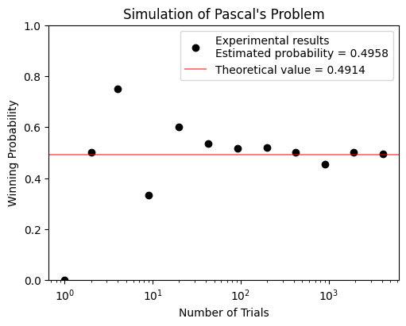
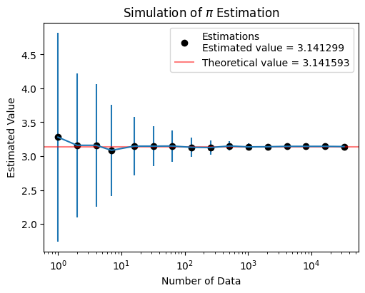
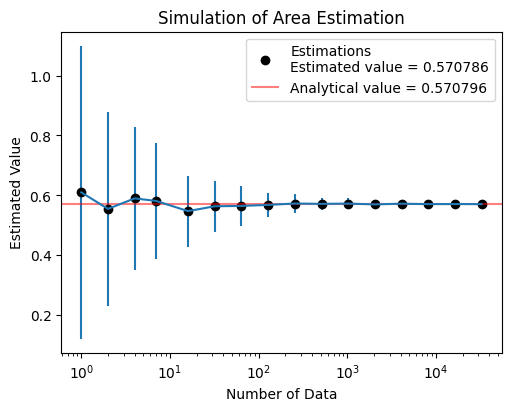
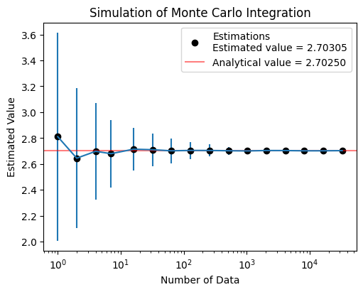
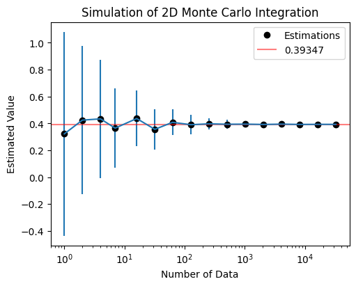

Limit Theorems and Monte Carlo Method#
Last Time#
Part I: Random Walk
The drunkard’s walk
Biased random walks
Treacherous fields
Part II: Stochastic Programs
The concept of random variables
Distributions
Today#
Introduction#
An Experiment#
Assuming \(X \sim Uniform(0,1)\), we would like to know the sample mean \(\bar{X} = \frac{X_1 + X_2 + \dots + X_n}{n}\) and its variance \(\text{Var}(\bar{X})\) under different value of \(n\)
import numpy as np
def test(a=0, b=1):
"""Uniform distribution"""
for numSamples in [1, 10, 100, 1000]:
sampleMeans = []
for i in range(100):
# Generate random samples
rng = np.random.default_rng()
samples = (b-a) * rng.random(numSamples) + a
sampleMeans.append(np.mean(samples))
print("Number of Sample = {}".format(numSamples))
print(" Theoretical: (Mean, Var) = ({:.2f}, {:.4f})".format((b+a)/2, (b-a)**2/12))
print(" Sample: (Mean, Var) = ({:.2f}, {:.4f})".format(np.mean(sampleMeans), np.var(sampleMeans)))
test()
Number of Sample = 1
Theoretical: (Mean, Var) = (0.50, 0.0833)
Sample: (Mean, Var) = (0.47, 0.0955)
Number of Sample = 10
Theoretical: (Mean, Var) = (0.50, 0.0833)
Sample: (Mean, Var) = (0.50, 0.0092)
Number of Sample = 100
Theoretical: (Mean, Var) = (0.50, 0.0833)
Sample: (Mean, Var) = (0.50, 0.0008)
Number of Sample = 1000
Theoretical: (Mean, Var) = (0.50, 0.0833)
Sample: (Mean, Var) = (0.50, 0.0001)
What have we learned in this simulation?
As the number of samples increases, the value of sample mean tempts to converge and its variance decreases.
We already know the truth that \(\mathbb{E}[X] = 0.5\) for \(X \sim Uniform(0, 1)\).
After this simulation, we can confirm that this is truth.
Pascal’s Problem#
Reputedly, Pascal’s interest in the field that came to know as probability theory began when a friend asked him a question:
Is it profitable to bet that one can get a double 6 within 24 rolls of a pair of dice?
To solve this problem, we have
The probability of rolling a double 6 is \(\frac{1}{36}\).
The probability of not rolling a double 6 on the first roll is \(1 - \frac{1}{36} = \frac{35}{36}\).
Therefore the probability of not rolling a double 6 in 24 consecutive times is \((\frac{35}{36})^{24} \approx 0.49\)
Also, we can write a stochastic program to simulate this game.
from scripts.testFuncs import test1
test1()
Run Simulation of Pascal's Game
Probability of winning = 0.4958

What have we learned in the Pascal’s problem?#
As the number of trials increases, the winning probability tempts to converge.
According to our derivation, the probability of not rolling a double \(6\) in \(24\) consecutive times is \((\frac{35}{36})^{24} \approx 0.4914\).
After this simulation, we can confirm that this is truth.
\(\pi\) Estimation#
One of the most historical achievement in mathematics is the estimation of the mathematical constant, \(\pi\). The approximation reached an accuracy within \(0.04%\) of the true value before the beginning of the Common Era. Nowadays, the current record of approximation error is within 100 trillion (\(10^{14}\)) digits.
Long before computers were invented, the French mathematicians Buffon (1707-1788) and Laplace (1749-1827) proposed using a stochastic simulation to estimate the value of \(\pi\).
Today, we are going to use the computer to solve this issue.

To solve this, let’s assume \(P_0 (x,y)\) is a point sampled from \(R = [-1,1] \times [-1,1]\). What we are interesting is the probability that \(P_0\) is in the circle?
The area of the square is \(A_1 = 4\).
The area of the circle is \(A_2 = \pi \cdot 1^2 = \pi\).
The probability that \(P_0\) is in the circle is \(\frac{A_2}{A_1} = \frac{\pi}{4}\).
Let’s assume we have \(N\) points which are uniformly sampled from \(R = [-1,1] \times [-1,1]\). And we found that \(m\) points are in the circle. We can estimate the value of \(\pi\) based on \(\pi \approx \frac{4m}{N}\).
Also, we can write a stochastic program to simulate this estimation.
from scripts.testFuncs import test2
test2(numTrials=100, toPrint=True)
Est. = 3.280000, STD = 1.536750, numData = 1
Est. = 3.160000, STD = 1.065082, numData = 2
Est. = 3.160000, STD = 0.902441, numData = 4
Est. = 3.085714, STD = 0.671277, numData = 7
Est. = 3.147500, STD = 0.433150, numData = 16
Est. = 3.147500, STD = 0.292286, numData = 32
Est. = 3.149206, STD = 0.234491, numData = 63
Est. = 3.130709, STD = 0.141417, numData = 127
Est. = 3.127031, STD = 0.101374, numData = 256
Est. = 3.150000, STD = 0.068634, numData = 512
Est. = 3.136328, STD = 0.049861, numData = 1024
Est. = 3.138867, STD = 0.035002, numData = 2048
Est. = 3.144195, STD = 0.024529, numData = 4095
Est. = 3.144578, STD = 0.017188, numData = 8191
Est. = 3.144398, STD = 0.012648, numData = 16383
Est. = 3.141299, STD = 0.009148, numData = 32768

What have we learned in the \(\pi\) Estimation?#
As the number of data increases, the estimated value tempts to converge and the standard deviation of estimations is decreasing.
According to our simulation, we can only get a “close” result of \(\pi\), which means that we will never acquire an correct answer.
Limit Theorems#
Law of large numbers#
The Expectation of Sample Means (The Means of the Samples)#
Why can we acquire an estimation that is more and more accurate as the number of data increasing?
For independent and identically distributed (i. i. d.) random variables \(X_1, X_2, \dots, X_n\), the sample mean \(\bar{X}\) is defined as
Since the \(X_i\)’s are random variables, the sample mean \(\bar{X}\) is also a random variable. Thus we have
The above equation means that, as the number of sample increasing, the expectation of sample means is equal to the expectation of the population mean.
The Variance of the Sample Means#
Also, the variance of the sample mean \(\bar{X}\) is given by
This means that, as the number of sample increasing, the variance of the sample means is equal to the variance of the population divided by the sample size, n.
Therefore, we get the weak law of large numbers (WLLN). For any \(\epsilon > 0\),
The Central Limit Theorem (CLT)#
Given a set of sufficiently large samples drawn from the same population, the sample means will be approximately normally distributed, i.e., the distribution of sample means will be a normal distribution.
This normal distribution will have a mean close to the mean of the population.
The variance of the sample means will be close to the variance of the population divided by the sample size.
Monte Carlo method#
A numerical approach for acquiring an approximate solution of a problem that is difficult to solve its analytical solution.
It is an approximate solution based on the law of large numbers. This implies that it can only provide a close enough solution, not correct answer.
General flowchart:
Define a domain of possible inputs.
Generate inputs randomly from a probability distribution over the domain.
Perform a deterministic computation on the inputs.
Aggregate the results.
1. Area Estimation#

Calculate the area of gray region.
Domain of possible inputs: \( x, y \in [0, 1]\)
Randomly and uniformly generate \(N\) samples over the domain.
Count 1 if the sample satisfies the conditions (\( M = M +1 \))
\[\begin{split} x^2 + y^2 \leq 1 \\ (x-1)^2 + (y-1)^2 \leq 1 \end{split}\]Aggregate the result by
\[ \text{Estimation} = \frac{M}{N} \]
from scripts.testFuncs import test3
test3(numTrials=100, toPrint=True)
Est. = 0.61000, STD = 0.48775, numData = 1
Est. = 0.55500, STD = 0.32323, numData = 2
Est. = 0.59000, STD = 0.23854, numData = 4
Est. = 0.58143, STD = 0.19405, numData = 7
Est. = 0.54750, STD = 0.11830, numData = 16
Est. = 0.56375, STD = 0.08442, numData = 32
Est. = 0.56476, STD = 0.06724, numData = 63
Est. = 0.56827, STD = 0.04107, numData = 127
Est. = 0.57281, STD = 0.03159, numData = 256
Est. = 0.57176, STD = 0.02015, numData = 512
Est. = 0.57258, STD = 0.01733, numData = 1024
Est. = 0.56997, STD = 0.01103, numData = 2048
Est. = 0.57228, STD = 0.00829, numData = 4095
Est. = 0.57084, STD = 0.00503, numData = 8191
Est. = 0.57111, STD = 0.00321, numData = 16383
Est. = 0.57079, STD = 0.00237, numData = 32768

2. Univariate Integration#

Given an univariate function \(f(x)\), calculate a definite integral \(I\) from \(a\) to \(b\).
\[\begin{split} I = \int_{a}^{b} {f(x)} \,{\rm d}x \\ f(x) = \frac{x}{2} \end{split}\]Domain of possible inputs: \( x \in [1.2, 3.5]\)
Randomly and uniformly generate \(N\) samples over the domain.
Calculate \(E_N\) as an approximation of \(I\)
\[ E_N = \frac{(b-a)}{N} \sum_{i=1}^{N} f(x_i) \]
from scripts.testFuncs import test4
test4(numTrials=100)
Est. = 2.81076, STD = 0.80174, numData = 1
Est. = 2.64477, STD = 0.53939, numData = 2
Est. = 2.69791, STD = 0.37507, numData = 4
Est. = 2.67956, STD = 0.26085, numData = 7
Est. = 2.71422, STD = 0.16652, numData = 16
Est. = 2.71018, STD = 0.12625, numData = 32
Est. = 2.70173, STD = 0.09708, numData = 63
Est. = 2.70459, STD = 0.06494, numData = 127
Est. = 2.70422, STD = 0.04715, numData = 256
Est. = 2.70225, STD = 0.03079, numData = 512
Est. = 2.70088, STD = 0.02299, numData = 1024
Est. = 2.70385, STD = 0.01787, numData = 2048
Est. = 2.70357, STD = 0.01075, numData = 4095
Est. = 2.70172, STD = 0.00819, numData = 8191
Est. = 2.70186, STD = 0.00604, numData = 16383
Est. = 2.70305, STD = 0.00409, numData = 32768

Exercise 3.1: Monte Carlo Integration#

Please estimate the area of function \(f(x)\) from 0.5 to 3.0 based on Monte Carlo method.
Please repeat your estimation 100 times. The standard deviation of your estimation in these 100 trials should be less than 0.01.
3. Monte Carlo Integration (multi-variate)#
Given a multi-variate function \(f(\mathbf{x})\), calculate a definite integral \(I\) in domain \(\Omega\).
\[\begin{split} I = \iint_{\Omega}^{} {f(x, y)} \,{\rm d}x {\rm d}y \\ \end{split}\]Domain of possible inputs: \( \mathbf{x} = (x, y) \in \Omega\)
Randomly and uniformly generate \(N\) samples over the domain.
Calculate \(E_N\) as an approximation of \(I\)
\[ E_N = \frac{\text{Area}(\Omega)}{N} \sum_{i=1}^{N} f(\mathbf{x}_i) \]However, the shape of domain \(\Omega\) will affect the result of your estimation.
3.1 Multi-variate Monte Carlo Integration on Rectangular Domain#


Given a multi-variate function \(f(\mathbf{x})\), calculate a definite integral \(I\) in domain \(\Omega = [-1,1] \times [-1,1]\).
\[\begin{split} I = \iint_{\Omega}^{} {f(x, y)} \,{\rm d}x {\rm d}y \\ f(x, y) = \frac{1}{2 \pi} \exp{ [- \frac{1}{2} (x^2 + y^2)] } \end{split}\]Domain of possible inputs: \( \mathbf{x} \in \Omega = [-1,1] \times [-1,1]\)
Randomly and uniformly generate \(N\) samples over the domain \(\Omega = [-1,1] \times [-1,1]\).
Calculate \(E_N\) as an approximation of \(I\)
\[ E_N = \frac{\text{Area}(\Omega)}{N_{\Omega}} \sum_{i=1}^{N_{\Omega}} f(\mathbf{x}_i) \]
3.2 Multi-variate Monte Carlo Integration on Non-rectangular Domain#


Given a multi-variate function \(f(\mathbf{x})\), calculate a definite integral \(I\) in domain \(\Omega : x^2 + y^2 \leq 1\).
\[\begin{split} I = \iint_{\Omega}^{} {f(x, y)} \,{\rm d}x {\rm d}y \\ f(x, y) = \frac{1}{2 \pi} \exp{ [- \frac{1}{2} (x^2 + y^2)] } \end{split}\]Domain of possible inputs: \( \mathbf{x} \in R = [-1,1] \times [-1,1]\)
Randomly and uniformly generate \(N_R\) samples over the domain \(R = [-1,1] \times [-1,1]\).
Keep the samples in the domain \(\Omega\). The number of samples in the domain is approximately \(N_{\Omega}\).
Calculate \(E_N\) as an approximation of \(I\)
\[\begin{split} E_N = \frac{\text{Area}(\Omega)}{N} \sum_{i=1}^{N} f(\mathbf{x}_i) = \frac{\text{Area}(R)}{N_{R}} \sum_{i=1}^{N_{\Omega}} f(\mathbf{x}_i) \\ \because \frac{N_{\Omega}}{N_R} = \frac{\text{Area}(\Omega)}{\text{Area}(R)} \end{split}\]
from scripts.testFuncs import test5
L = 2
test5(numTrials=64, a=(-L, -L), b=(L, L))
Est. = 0.32213, STD = 0.75632, numData = 1
Est. = 0.42451, STD = 0.55285, numData = 2
Est. = 0.43377, STD = 0.44072, numData = 4
Est. = 0.36498, STD = 0.29608, numData = 7
Est. = 0.43628, STD = 0.20733, numData = 16
Est. = 0.35599, STD = 0.14940, numData = 32
Est. = 0.40810, STD = 0.09647, numData = 63
Est. = 0.39041, STD = 0.07376, numData = 127
Est. = 0.39693, STD = 0.04156, numData = 256
Est. = 0.39377, STD = 0.03174, numData = 512
Est. = 0.39460, STD = 0.02286, numData = 1024
Est. = 0.39231, STD = 0.01704, numData = 2048
Est. = 0.39459, STD = 0.01039, numData = 4095
Est. = 0.39239, STD = 0.00925, numData = 8191
Est. = 0.39307, STD = 0.00693, numData = 16383
Est. = 0.39289, STD = 0.00430, numData = 32768

Exercise 3.2: Multi-variate Monte Carlo Integration#

Please estimtate the definite integral of function \(f(x, y)\) over domain \(\Omega\) based on Monte Carlo method.
The condition of this exercise:
Please repeat your estimation 100 times. The standard deviation of your estimation in these 100 trials should be less than 0.01.
Summary of Monte Carlo Method#
A numerical approach for acquiring an approximate solution of a problem that is difficult to solve its analytical solution.
It is an approximate solution based on the law of large numbers. This implies that it can only provide a close enough solution, not correct answer.
General flowchart:
Define a domain \(\Omega\) of possible inputs, \(\mathbf{x} \in \Omega\).
Randomly generate \(N_R\) samples from a probability distribution (usually use uniform distribution) over the domain \(R\). The target domain \(\Omega\) should be in the domain \(R ( \Omega \in R )\).
Keep the samples in the domain \(\Omega\). The number of samples in the domain is approximately \(N_{\Omega}\).
Perform a deterministic computation on the inputs.
Aggregate the results.
Don't click this
-
Exercise 3.1
import matplotlib.pyplot as plt import numpy as np import random from scipy.integrate import quad from .utils import getIntegralEst def exercise1(numTrials=100, numData=2**15, **kwargs): a = kwargs.get("a", 0.5) b = kwargs.get("b", 3.) func = kwargs.get("func", lambda x: (1 + np.sin(x) * (np.log(x))**2)**(-1)) toPrint = kwargs.get("toPrint", True) xVals, yEsts, yStds= [], [], [] xAxis = np.geomspace(1, numData, 16, dtype=np.int64) for val in xAxis: curEst, std = getIntegralEst( numData=val, numTrials=numTrials, a=a, b=b, func=func ) xVals.append(val) yStds.append(std) yEsts.append(curEst) if toPrint: print("Est. = {:.05f}, STD = {:.05f}, numData = {}".format(curEst, std, val)) fig = plt.figure(figsize=(5,4), dpi=100, layout="constrained", facecolor="w") ax1 = fig.add_subplot(111) ax1.errorbar( x=xVals, y=yEsts, yerr=yStds, ) ax1.plot(xAxis, yEsts, 'ko', label="Estimations") ax1.set_title("Exercise 1") ax1.set_xlabel("Number of Data") ax1.set_ylabel("Estimated Value") ax1.set_xscale("log") xMin, xMax = ax1.get_xlim() scipyResult = quad(func=func, a=a, b=b) ax1.hlines( scipyResult[0], xmin = xMin, xmax = xMax, colors = 'r', alpha = 0.5, label = "{:.05f}".format(scipyResult[0]) ) ax1.legend(loc="best") plt.show()
-
Exercise 3.2
import matplotlib.pyplot as plt import numpy as np import random from scipy.integrate import quad def exercise2(numTrials=100, numData=2**15, **kwargs): def est4exercise2(numData, numTrials, a, b, func): estimates = [] for t in range(numTrials): integralGuess = mcFunc4exercise2(numData, a=a, b=b, func=func) estimates.append(integralGuess) std = np.std(estimates) curEst = sum(estimates)/len(estimates) return (curEst, std) def mcFunc4exercise2(numData, a, b, func): I = 0. a1, a2, b1, b2 = a[0], a[1], b[0], b[1] for data in range(numData): x = (b1-a1)*random.random() + a1 y = (b2-a2)*random.random() + a2 if abs(x-0.3)/2 + abs(y-0.3) <= 0.25: I += func(x, y) return 1*0.5*0.5*I/numData def gabor(x, y): """Simple version Gabor function for Monte Carlo""" sigma, theta, gamma = 0.4, np.pi/4, 2 sigma_x = sigma sigma_y = sigma / gamma # Rotation x_theta = x * np.cos(theta) + y * np.sin(theta) y_theta = -x * np.sin(theta) + y * np.cos(theta) gb = np.exp( -0.5 * (x_theta**2 / sigma_x**2 + y_theta**2 / sigma_y**2) ) * np.cos(2 * np.pi * x_theta) return gb a = kwargs.get("a", (-0.2, 0.05)) b = kwargs.get("b", (0.8, 0.55)) func = kwargs.get("func", gabor) toPrint = kwargs.get("toPrint", True) xVals, yEsts, yStds= [], [], [] xAxis = np.geomspace(1, numData, 16, dtype=np.int64) for val in xAxis: curEst, std = est4exercise2( numData=val, numTrials=numTrials, a=a, b=b, func=func, ) xVals.append(val) yStds.append(std) yEsts.append(curEst) if toPrint: print("Est. = {:.05f}, STD = {:.05f}, numData = {}".format(curEst, std, val)) fig = plt.figure(figsize=(5,4), dpi=100, layout="constrained", facecolor="w") ax1 = fig.add_subplot(111) ax1.errorbar( x=xVals, y=yEsts, yerr=yStds, ) ax1.plot(xAxis, yEsts, 'ko', label="Estimations") ax1.set_title("Simulation of 2D Monte Carlo Integration") ax1.set_xlabel("Number of Data") ax1.set_ylabel("Estimated Value") ax1.set_xscale("log") ax1.legend(loc="best") plt.show()